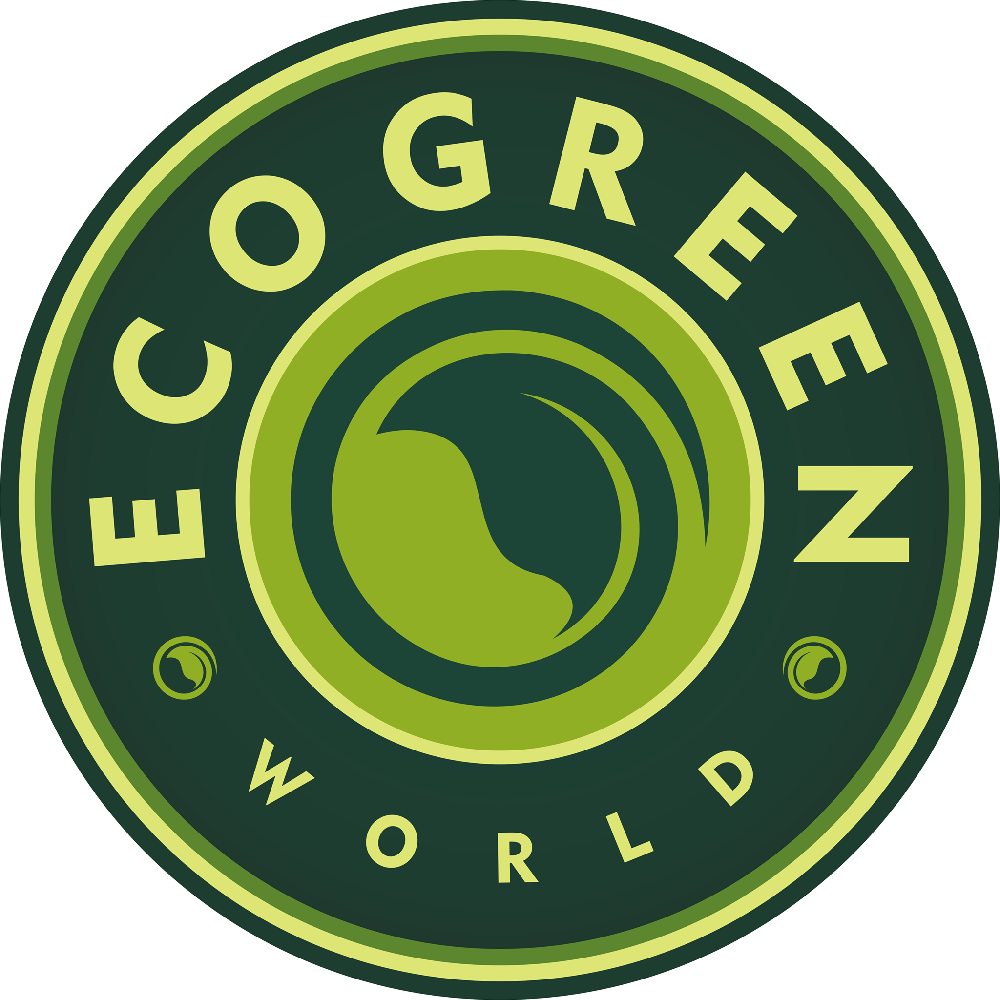
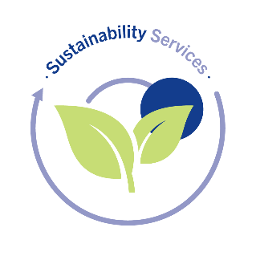
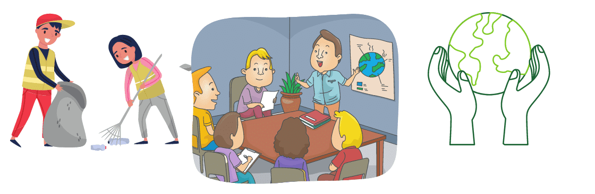

Welcome to Our Eco-Green World
We are dedicated towards ensuring that our planet has an environmentally friendly future ahead . Our goal is to spread the word about environmentally conscious conduct and the value of conserving the environment . Come along with us on this adventure in which we strive to create a greener, more ecologically sound planet for future generations to follow .
Environmental sustainability
We're delighted to have you here at EcoGreen , where we're committed to advancing ecological sustainability and protecting our surroundings for generations to come . An extensive approach called ecological sustainability aims to reconcile human activity with the surrounding environment . It entails making decisions and practicing behaviors that reduce our environmental impact and guarantee our planet's over time well-being and health .
Being familiar with the effects of unsustainable practices
The effects of unsustainable actions on the environment are extensive . Ecosystems and societies throughout the world are seriously threatened by environmental degradation , which is the result of uncontrolled emissions of greenhouse gases . Among the effects we are now seeing include melting glaciers , harsh weather , and increasing temperatures worldwide . Deforestation , loss of habitat , along with pollutants are also contributing to ecological deterioration and loss of biodiversity .
The recognition of the primary causes of unsustainability
Understanding the underlying causes of unsustainability is vital for finding solutions to the problems we face . Amongst the main causes are accelerated population expansion , excessive patterns of consumption , and a heavy reliance on non-renewable energy sources . We need to prioritize the switch towards cleaner and green power resources , support energy conservation, and re-examine existing systems of production and consumption as we work toward sustainability .
The transition toward an environmentally friendly Tomorrow with green energy
Fossil fuels can be replaced by energy sources that are renewable , like solar , wind , and hydroelectric . Adopting alternative forms of energy not merely lessens our reliance on limited resources , it additionally helps to cut emissions of greenhouse gases and advance attempts to halt climate change . We can create a more environmentally friendly and more resilient future by making investments in clean energy infrastructures and promoting their wider use .
Embracing the circular economy
A circular economy focuses on reducing waste , increasing efficiency of resources , and fostering closed-loop systems . We strive to create goods with longevity , versatility and recyclability in mind rather than the conventional linear "take-make-dispose" approach . Consumers can lessen the burden on earth's resources and cut down on harmful emissions by reusing , upcycling and practicing effective waste disposal .
Encouraging agriculture that is sustainable to ensure a food-secure future
In order to maintain a sustainable environment , agriculture is essential . We can assure the supply of food whilst reducing our influence on the ecosystem by adopting sustainable agriculture methods including organic gardening , agroforestry and targeted irrigation . The principles of environmentally friendly farming emphasize the preservation of biodiversity , the well-being of the land and prudent pesticide and fertilizer usage . We encourage regional and environmentally friendly agriculture , which benefits both people and the environment .
Taking personal initiative
Even while structural improvements are required , individual acts additionally have a major influence on the sustainability of the environment . We can help create a more sustainable future by developing easy but effective habits like water preservation , trash reduction , energy utilization and eco-aware purchasing decisions . In order to empower people to take environmentally friendly choices and motivate others to get involved the cause, knowledge and understanding are essential .
Cooperation and policies modifications
Coordination and adjustments to legislation at all degrees are necessary to achieve ecological sustainability . To create and execute environmentally friendly procedures , encourage innovation, and promote stringent environmental legislation, governments, corporations, companies and people in general must collaborate . We can build a society that is more durable and resilient for future generations as well as present by coordinating our actions and enacting changes that are systemic .
Facts and figures
Climate change :
Global CO2 levels highest in 3 million years (NASA)
Average global temperature up by 1 degree Celsius (IPCC)
Biodiversity Loss:
1 million species threatened with extinction (IPBES)
18 million acres of forest lost annually (WWF)
Plastic Pollution:
8 million tons of plastic in oceans yearly (Ocean Conservancy)
More plastic than fish in oceans by 2050 (Ellen MacArthur Foundation)
Renewable Energy:
26% global electricity from renewables (IRENA)
Global solar capacity exceeds 770 GW in 2020 (IEA)
Sustainable Agriculture:
Organic farming reduces emissions by 30% (UN)
Agroforestry benefits soil health and biodiversity (World Agroforestry)
Waste Reduction:
Recycling 1 ton of paper saves 17 trees, 7,000 gallons of water, 380 gallons of oil (EPA)
Circular economy could generate $4.5 trillion by 2030 (Accenture)
Embracing sustainability !
Become familiar with Environmentally Friendly Products

Discover our extensive selection of environmentally friendly items , which are created to reduce the ecological footprint without sacrificing the quality or style . We thoroughly evaluate every item to guarantee it satisfies our stringent sustainability requirements , ranging from recyclable home goods to organically sourced personal care products . By selecting these goods , you not solely minimize pollution but additionally promote industries who care about ethics and the environment .
Services that are sustainable to ensure a brighter Future
To assist people and companies in making environmentally conscious decisions , we provide environmentally friendly services . Our crew of specialists is eager to help you throughout each phase of your journey , whether or not you're deploying energy-efficient approaches , applying eco-friendly procedures , or improving your waste disposal tactics . We can significantly reduce our ecological footprints and protect the planet's resources if we work cooperatively .
Educational resources for Self-Reliant improvement
Our extensive library of educational resources on environmental sustainability preservation, as well as green living will keep you educated and motivated . Our website's blog posts , directs and other materials address an extensive variety of subjects , from advice on leading an environmentally friendly lifestyle to the newest developments in clean energy . We think that by giving people the opportunity to obtain understanding , we may encourage people to make significant improvements and build a world which is more sustainable .
Join us !

We cordially encourage everyone to become a part of our ever-growing community of socially and ecologically responsible people . We can strengthen our initiatives as a group and become a catalyst for positive change if we work in tandem . Visit our official site , follow our socials , and learn how you can make a difference in the world around you by taking daily action . Every tiny move matters , whether it's encouraging policy reforms , decreasing waste , or promoting community environmental initiatives .